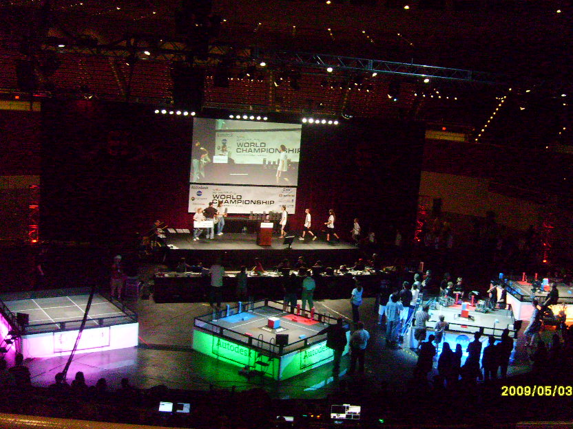
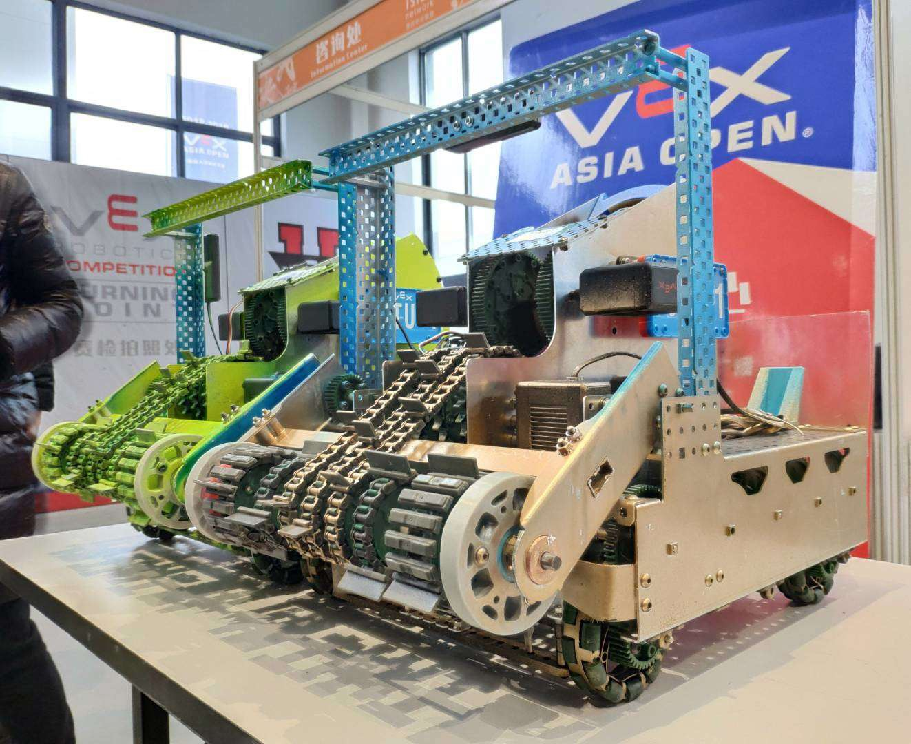

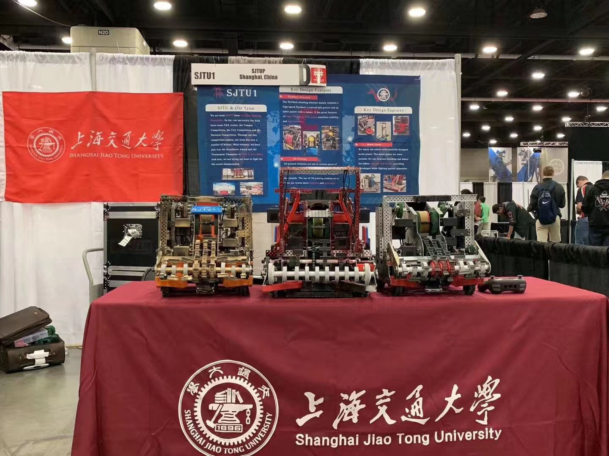
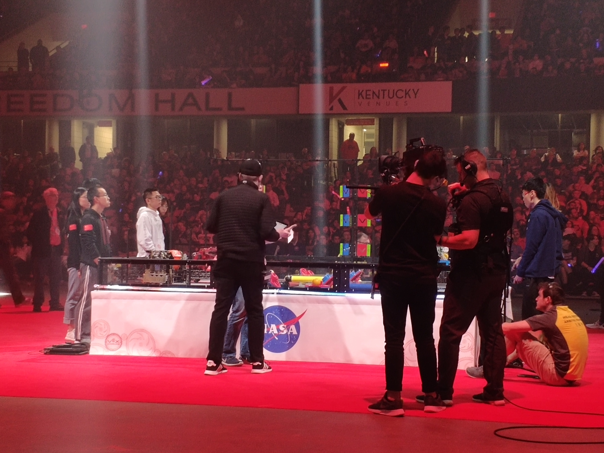
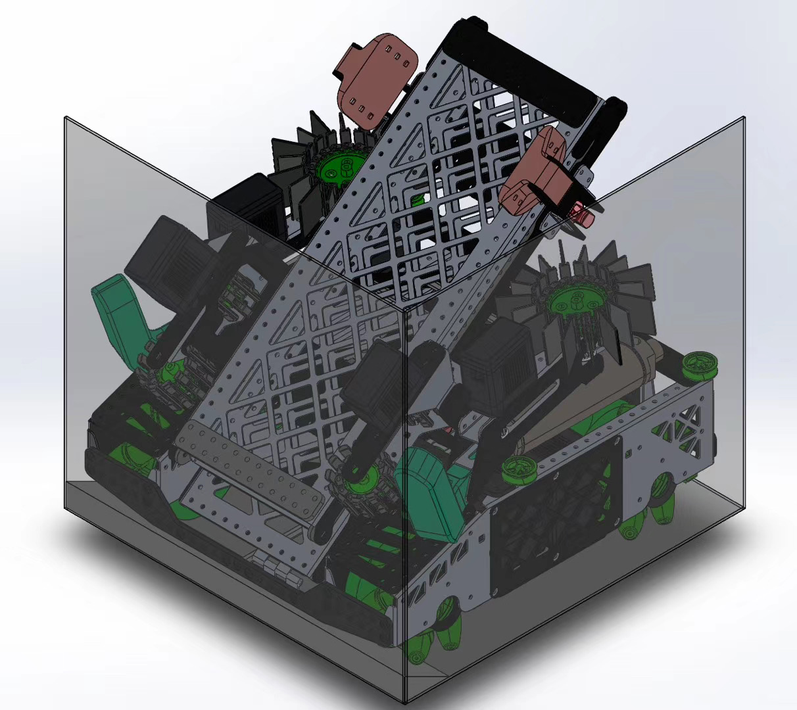
My Unbreakable Bond with Robots
I forged an unbreakable bond with robots in elementary school. Since then, I've actively participated
in various robotic competitions, from local city events to global stages. After years of efforts, my
long-cherished dream of becoming a world champion in the VEX Robotic competition finally came true, as I
proudly led the SJTU1 team to the 2019 Robot Skills World Championship.
Rearn More
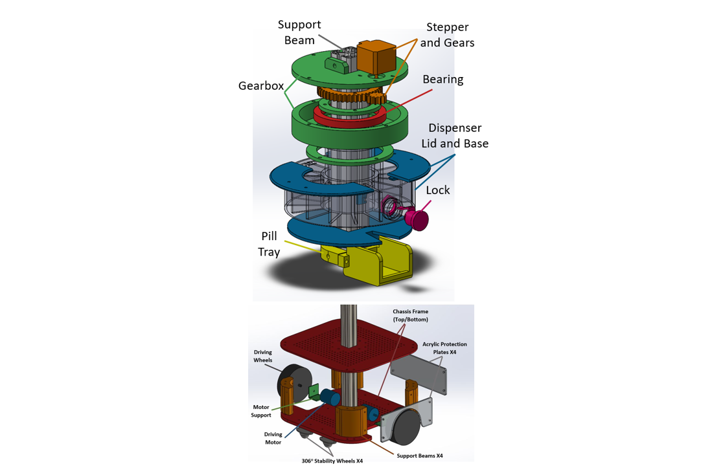
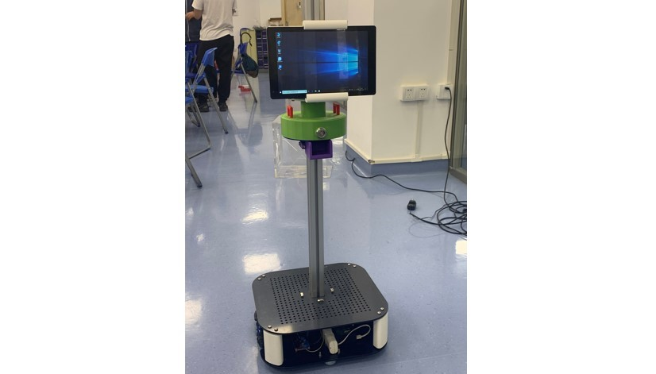
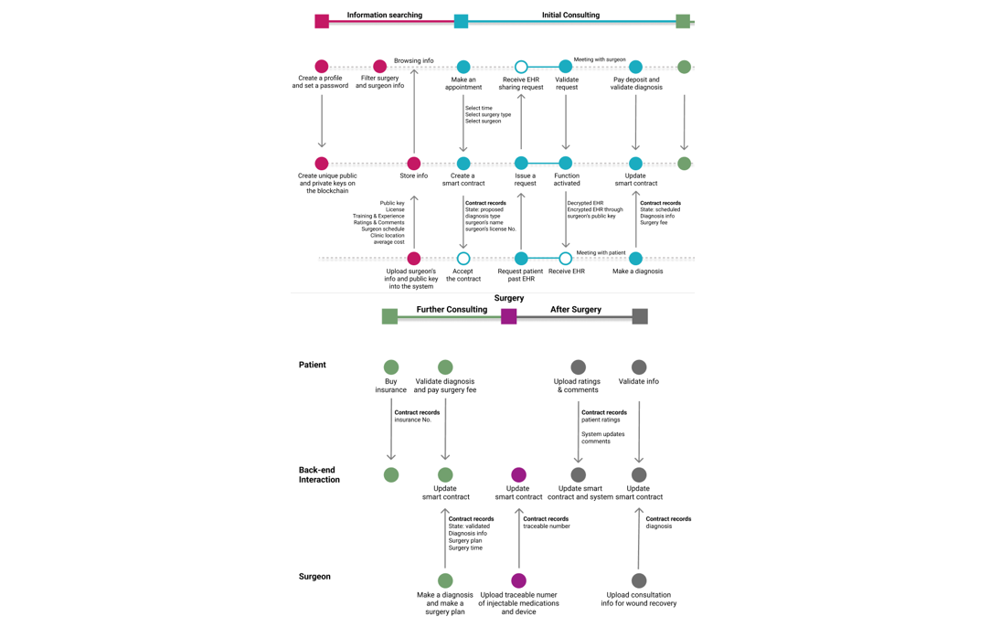
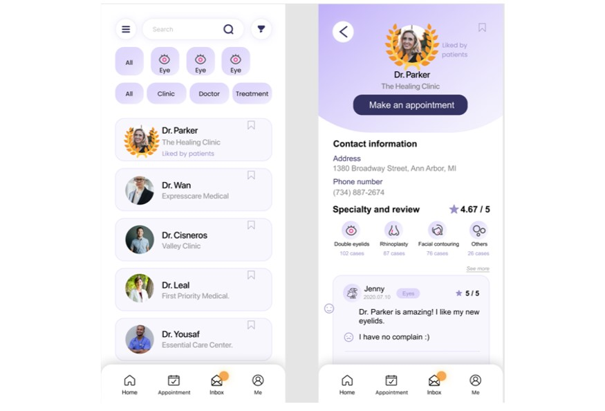
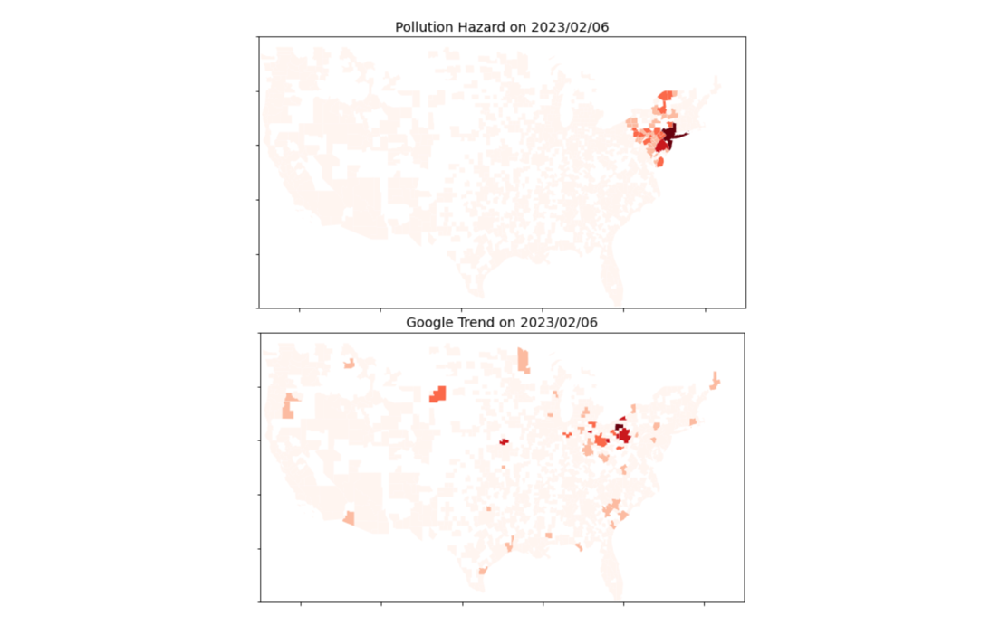
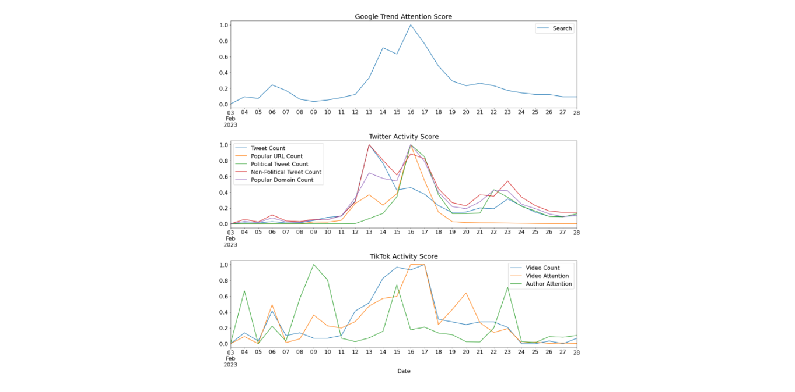
Academic Research X Social Business
I'm proud of applying knowledge and skills to benefit the public. In SJTU, I conducted valuable
research and published papers on remote healthcare, proving especially relevant during the COVID. At
Umich, I became a finalist in the fintech crypto challenge with a DApp prototype building trust in the
healthcare industry. Moreover, I actively contributed to enhancing the efficiency of information spread
on social media.
Rearn More
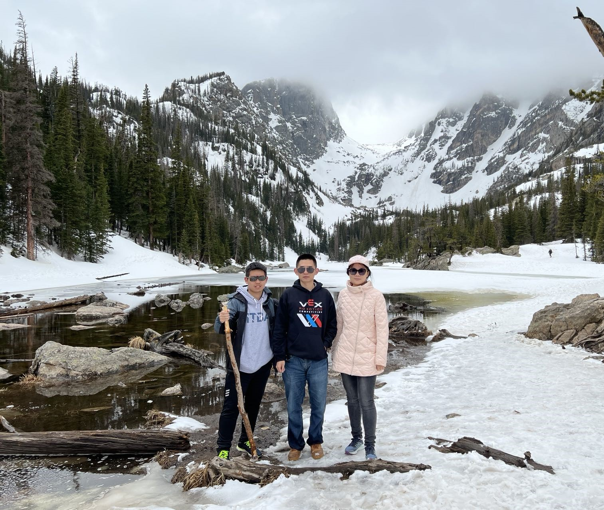
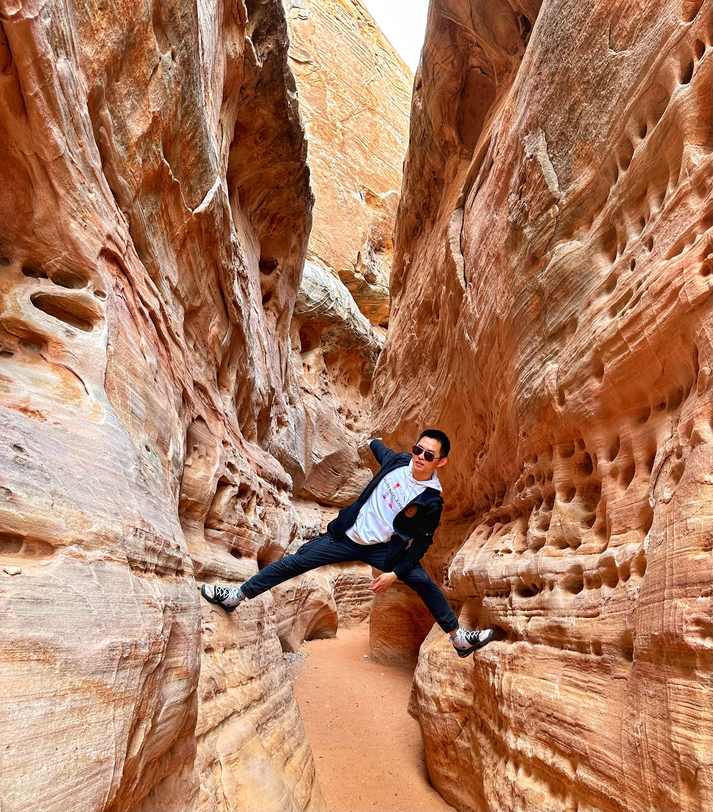
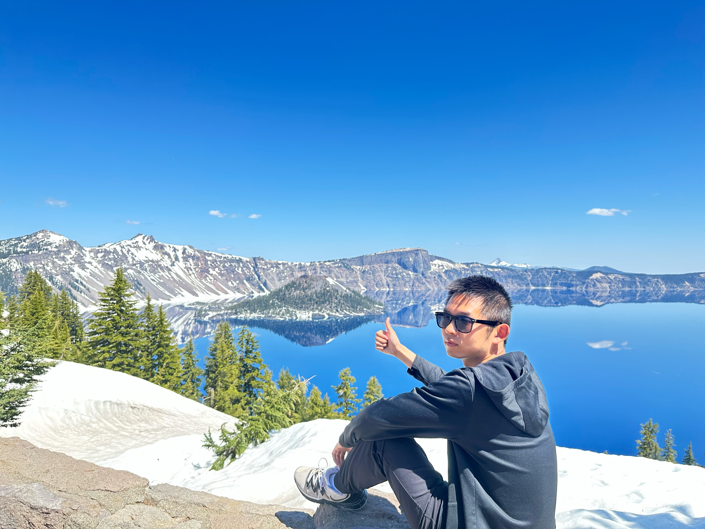
Embrace Travelling
I developed a profound passion for road trips after embarking on a 3000-mile drive from Ann Arbor, MI,
to San Francisco, CA. Along the journey, the towering Rocky Mountains, majestic shorelines, vibrant
Antelope Canyon, and refreshing Pacific Coast enchanted me, and amidst these marvelous views, troubles
seemed to fade away. Since then, I can't resist exploring new places and immersing myself in the beauty
of nature.
Rearn More